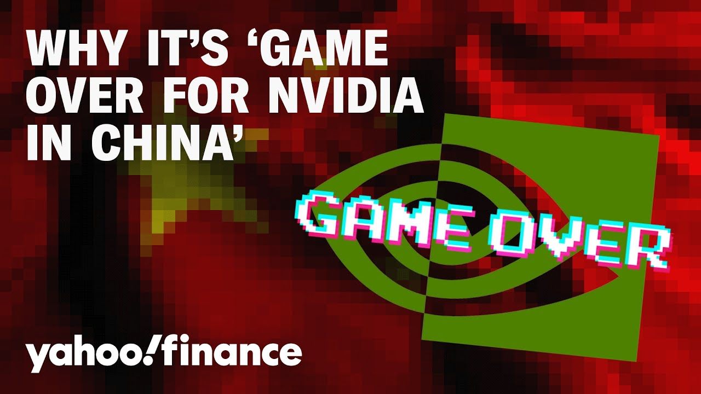

来B站一起耍【Global每日英语简报】
【为什么说“英伟达在中国市场大势已去”】
Summary: Nvidia faces a major setback in China as Huawei develops a competing AI chip, potentially ending Nvidia's dominance there, while its growth prospects remain strong in developed markets like the US and Europe.
摘要： 英伟达在中国市场遭遇重大挫折，华为正研发竞争性AI芯片可能终结其主导地位，但英伟达在欧美等发达市场仍具增长潜力。

⏱️ Estimated Reading Time: 11 min
Shares of Nvidia are down a little over 2% after news the Chinese company Huawei is developing an AI chip it believes can compete with Nvidia's H100.
英伟达股价下跌略超2%，因有消息称中国公司华为正在研发一款AI芯片，认为其性能可媲美英伟达H100。
That's according to the Wall Street Journal.
这一消息来自《华尔街日报》。
For a closer look at the chip sector I want to bring in Brian Klo.
为深入分析芯片行业，我们邀请到晨星股票策略师布莱恩·克罗。
He is Morning Star's equity strategist Brian great to speak with you this morning.
他是晨星的股票策略师，布莱恩，今早很高兴与您对话。
Talk to me about this potential competition coming in from China specifically Huawei here.
请谈谈中国尤其是华为带来的潜在竞争。
To what extent is that a real headwind for Nvidia oh I think the headwind is in place and I think it's pretty much game over for Nvidia and China.
这对英伟达的实际冲击有多大？我认为冲击已成定局，英伟达在中国基本大势已去。
I think the ban of the H20 was probably the final straw of Nvidia being able to sell anything halfway decent into China.
H20芯片被禁可能是压垮英伟达在华销售的最后稻草。
And I would expect that Huawei's product will probably be uh higher quality than uh the older products that Nvidia has been shipping or the H20 uh if not today than at some point in the new fe in the near future.
预计华为产品的质量将超越英伟达此前出货的老款产品或H20，即便现在未实现，近期也会达成。
So I do think Nvidia's pretty much cut off and and I do think of Nvidia from here on out as much more of a developed market story.
因此我认为英伟达基本被切断联系，未来其故事将更多围绕发达市场展开。
There's still plenty of growth in the US Europe Um so I I'm much more focused on on those markets at this point.
欧美市场仍有巨大增长空间，目前我更关注这些地区。
Brian I had to check the transcript when I sat down in my new seat over here to make sure I heard you correctly.
布莱恩，我坐下时不得不核对文稿以确保没听错。
You are very bearish Nvidia China business specifically off the back of this news.
您对英伟达中国业务极其悲观，尤其是基于这则消息。
What do you think that initiates for Nvidia do you think they potentially spin off the China business at some point or do you think they just cut their losses and invest in other markets.
您认为英伟达会因此剥离中国业务，还是止损并转投其他市场？
well I I think they already have a $5.5 billion write-off and we'll hear from them more in in late May.
他们已有55亿美元资产减记，五月下旬会披露更多信息。
So may you know it's possible maybe there's something they will be shipping.
或许他们仍会出货某些产品。
Um but I I think the restrictions have cut the materiality of of the China business in steps.
但限制措施已逐步削弱中国业务的重要性。
And I think this H20 uh cut and the 5 a.5 billion write off is um as close to the final straw as I could think of.
H20被禁和55亿减记近乎最后一击。
I think they just walk away and focus on the US and talk to me as long as um as long as they can.
我认为他们会退出并专注美国市场，只要条件允许。
I mean the if the restrictions get lifted Nvidia would love to be back there but I I just don't think the US uh government will let them quite frankly.
若限制解除英伟达愿重返，但坦白说美国政府不会允许。
So then what does that mean for American investors especially as we do head towards those Nvidia earnings.
这对美国投资者意味着什么？尤其临近英伟达财报季。
do you think that there is still a bull case for this name in the short term absolutely.
您认为短期仍存在看涨理由吗？绝对存在。
I think Nvidia is still selling everything they can make on the Grace Blackwell side.
英伟达Grace Blackwell产品仍供不应求。
Um there's still tremendous growth from the hyperscalers Google Microsoft etc.
谷歌、微软等超大规模企业仍推动巨大增长。
We're seeing few signs if any that they're really slowing spending in 2025.
几乎没有迹象显示他们2025年会缩减支出。
It seems like they're buying all the black oils they can for this year because of the performance improvements.
由于性能提升，他们今年似乎在全力采购Blackwell芯片。
And we're still skeptical that US companies are going to slow down their AI investments even with the recession.
即便经济衰退，我们仍怀疑美国企业会放缓AI投资。
AI is the future.
AI代表未来。
It is certainly a race right now.
当前无疑是场竞赛。
Uh and we think that spending continues in the short term.
我们认为短期支出将持续。
So I think Nvidia is set up.
因此英伟达前景稳固。
Now China uh could be a hit.
但中国市场可能受挫。
So maybe we do see um you know less earnings growth this year less revenue growth.
今年盈利与收入增长或放缓。
I maybe even revenues down quarter over quarter because of the big China hit.
受中国业务重创，收入甚至可能环比下降。
We'll see on that.
有待观察。
But everything else should be pretty good.
但其他领域应表现良好。
And there's still a lot to be bullish about for the US and AI in the future.
美国及AI未来仍有诸多看涨因素。
And just curious how you think about companies that announce investment plans this morning IBM becoming the latest with $150 billion investment in the US.
您如何看待今早宣布投资计划的企业？IBM最新宣布在美投资1500亿美元。
As you know there's already a $500 billion proposed investment from Nvidia.
英伟达已提议投资5000亿美元。
Does that change how you feel about any of these stocks does it make you think okay well maybe they'll get a carve out from the administration if they are playing ball with a domestic investment.
这会改变您对这些股票的看法吗？是否认为配合国内投资可能获得政策豁免？
Yeah So I I do think that's the upside.
是的，我认为这是上行空间。
So I think China has always been a risk and and you know your prior question is about the short term and the hit to China.
中国始终是风险因素，您之前问题涉及短期对华冲击。
So that's the downside I think that's why Nvidia has sold off at least I think the riskreward is still good because of the upside that you're mentioning all the all the investment that can still be done in the United States thinking about Stargate uh and everything else.
这是利空面，也是英伟达抛售原因，但风险回报仍佳，因您提到的美国投资潜力，如Stargate等项目。
I also think from a uh let's say tariff side of thing in the US that we're still in a race for AI.
从美国关税角度看，AI竞赛仍在继续。
The US wants to be in the lead in AI.
美国希望引领AI发展。
So I think if Nvidia and its partners you know these leading tech firms were to come to the US government and say "Hey we're being slowed down because of tariffs." I think those restrictions get replaced.
若英伟达等科技巨头向政府申诉关税阻碍发展，我认为限制会调整。
So I would say Nvidia is really one of our top picks.
因此英伟达仍是我们的首选股。
If you're looking for companies that have minimal tariff exposure from here again I think the H20 cut already happened but if you're looking from here on out I think Nvidia is probably better off than some other uh chip makers in terms of future tariffs that might get hit on them.
若寻找受关税影响最小的企业，H20虽已受限，但未来英伟达处境可能优于其他芯片商。
So Brian let's end where we started on this Huawei news.
布莱恩，让我们回到华为新闻的起点。
Given that you are talking about how Nvidia is well positioned amid the tariff impact they are cushioned to a degree.
鉴于您提到英伟达在关税冲击中具备缓冲。
Do you think that this narrative that I've heard from a lot of other investors that China is going to start to outpace the US when it comes to tech and specifically AI is that narrative a little overblown in your view.
许多投资者认为中国将在科技尤其是AI领域超越美国，您觉得这说法是否夸大？
um it's not overblown I I do think it's a risk.
并未夸大，我认为确实存在风险。
I mean there is a a very conscious decoupling of AI of between the US and China and the US restrictions uh have caused that.
美中AI领域正刻意脱钩，美国限制措施加速了这一进程。
And I think from the start the risk has always been if you're cutting China off from from US products uh is China going to go off and do something else what if they do something better uh than than what the US can do.
风险始终在于：若切断中国获取美国产品的渠道，中国是否会另辟蹊径甚至超越美国。
so I think that risk is still there.
因此风险依然存在。
I wouldn't say that the Huawei products right now today signal that China is clearly better in AI.
不能说当前华为产品表明中国AI已明显领先。
But it does uh continue to raise eyebrows that China might catch up faster than the US government thought.
但中国追赶速度可能超美国政府预期，这令人瞩目。
And this is the the consequ excuse me the consequence of those actions um that the I think Nvidia is still going to drive innovation.
这是限制措施的后果——英伟达仍将推动创新。
I think they're still best of breed in the US and I think the US will be leading but China has every incentive in the world to keep up and to be organized um to focus on Huawei like they don't need to do it uh while satisfying investors and that probably gives China at least a little bit of an advantage to keep close to the US.
英伟达仍是美国最优企业，美国将保持领先，但中国有充分动力聚焦华为等企业，无需兼顾投资者，这或赋予其追赶美国的些许优势。
I think that's possible.
我认为这是可能的。
Yes So is US tech dominance at risk in your view.
那么美国科技主导地位是否面临风险？
um I don't think so I mean again you're looking at Microsoft Meta Google Amazon I think those companies will still be just fine in AI.
我不认为，微软、Meta、谷歌、亚马逊等企业在AI领域仍将稳健。
The foundational models most of them are still um you know if you think about open AI and anthropic you know or US based companies.
基础模型大多仍由OpenAI、Anthropic等美国公司主导。
So uh I still think you're going to get plenty of innovation on the AI front in the US but China's probably going to be close.
因此美国AI创新仍将蓬勃，但中国可能紧随其后。
I mean Huawei's doing some impressive work Deepseek was certainly an impressive foundational model.
华为成果瞩目，深度求索的基础模型确实出色。
There there's large internet companies in China.
中国拥有大型互联网企业。
So you know it on a broader scale China is certainly a a rival to the US economically economically and technology-wise.
广义而言，中国无疑是美国经济与科技领域的对手。
And uh AI is just another piece where they're they're going to be.
AI只是又一竞争领域。